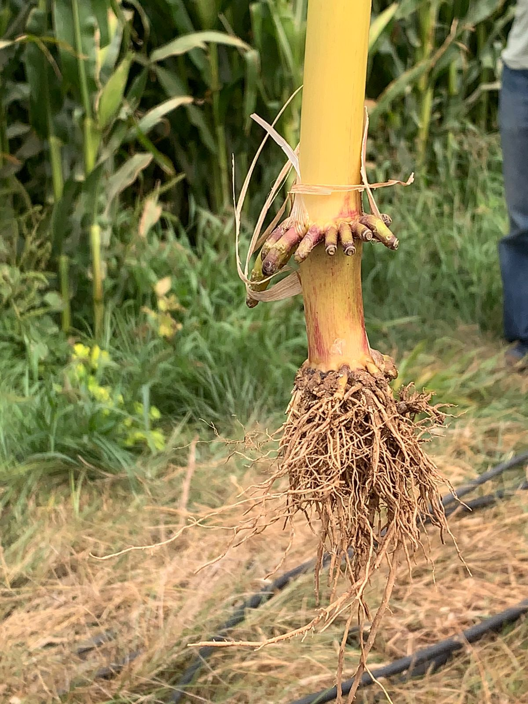
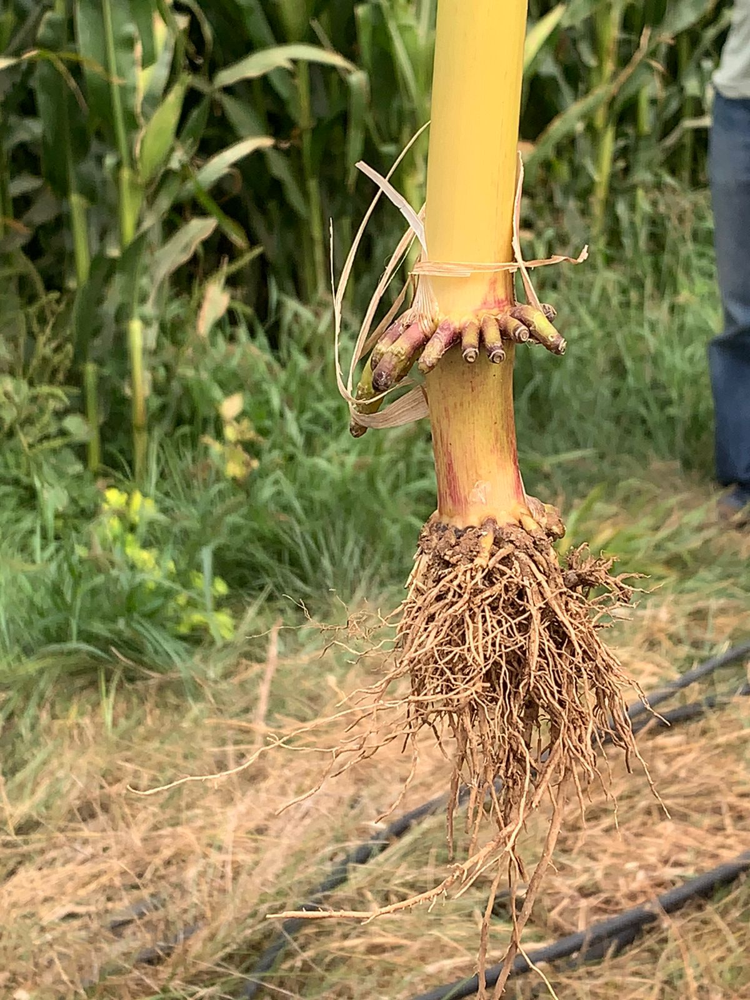
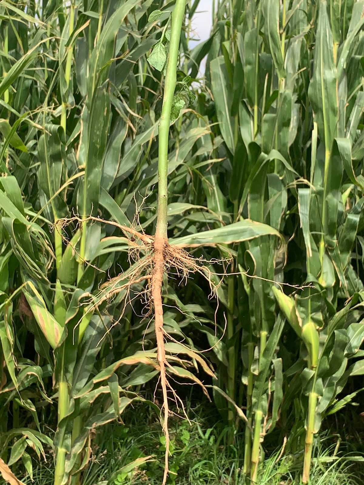
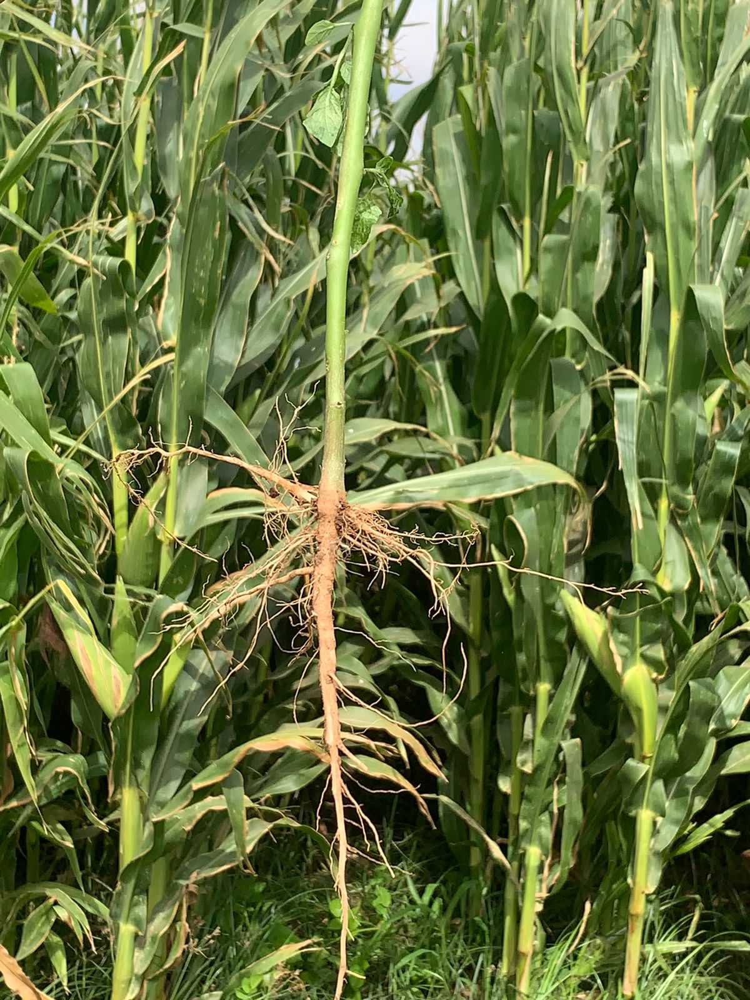
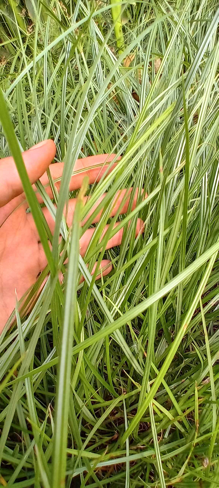

Monocotylédones
Les monocotylédones sont des plantes qui possèdent un seul cotylédon, ou feuille embryonnaire. Une caractéristique distincte de leurs feuilles est la présence de nervures parallèles. De plus, elles ont un système racinaire fibreux.
 

La plante de maïs a des racines ramifiées et de longues feuilles.
Dicotylédones
Les dicotylédones, quant à elles, possèdent deux cotylédons. Leurs feuilles se distinguent par des nervures réticulées. En outre, elles ont un système racinaire pivotant.
 

Une plante dicotylédone a des nervures réticulées et un système racinaire pivotant
Mauvaises Herbes
Mauvaises herbes : Ce terme est souvent utilisé de manière subjective pour décrire des plantes non désirées dans un contexte spécifique.

Exemple d'adventices (plante de pomme de terre) dans un champ de maïs
Adventices
Ce terme désigne spécifiquement les plantes qui poussent spontanément dans des cultures ou des jardins, sans y avoir été semées intentionnellement.
Exemple d'adventices (plante de pomme de terre) dans un champ de maïs
Différences
Les mauvaises herbes causent généralement beaucoup plus de dommages que les plantes adventistes, en raison de leur compétition intense avec les cultures agricoles pour les ressources nécessaires à leur croissance.